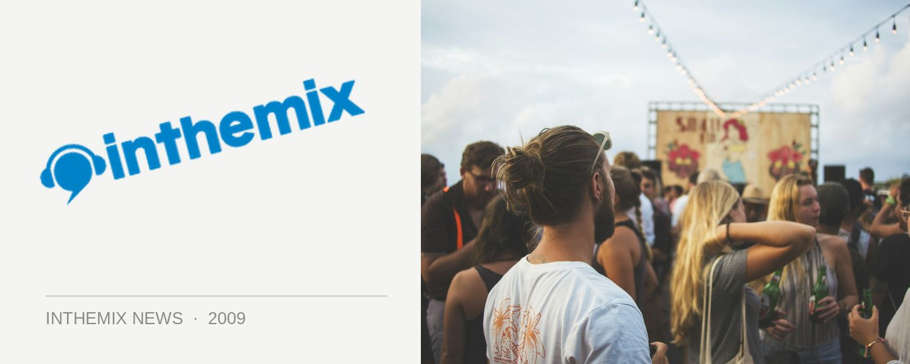

Set times for Interview's inthemix50 party
In 2009 the Sony inthemix50 Club Tour has been a truly epic undertaking, with more than 20 events staged nationwide throughout the five week voting period. It’s been the largest of its kind in Australia, celebrating the amazing breadth and diversity of our vibrant club scene, and this weekend if you’re in Melbourne you’ll have your last chance to check it out this weekend when it comes to Interview at Miss Libertines.
Featuring Disko Pussy, Jewelz, Freya, Atonix, Mischief, Danni B, Virginia Le, Lux (Live), Leazy Lou, Bean and Chrissie on the lineup, it’ll be free entry for first 50 inthemix members who have RSVPd that arrive before midnight.
Sony inthemix50 presents Interview: Luscious Loops at Miss Libertines in Melbourne, this Saturday August 1st. Check out set times below…
Mainroom:
10:00-11:30: Atonix
11:30-1:00: Danni B
1:00-2:30: Disko Pussy
2:30-4:00: Freya
4:00-5:30: Jewelz
5:30-6:30: LeazyLou
Front Room:
10:00-12:00: Bean
12:00-1:30: Mish’Chief
1:30-2:30: Lux (LIVE)
2:30-4:00: Virginia Le
4:00-6:00: Chrissie Ferrer